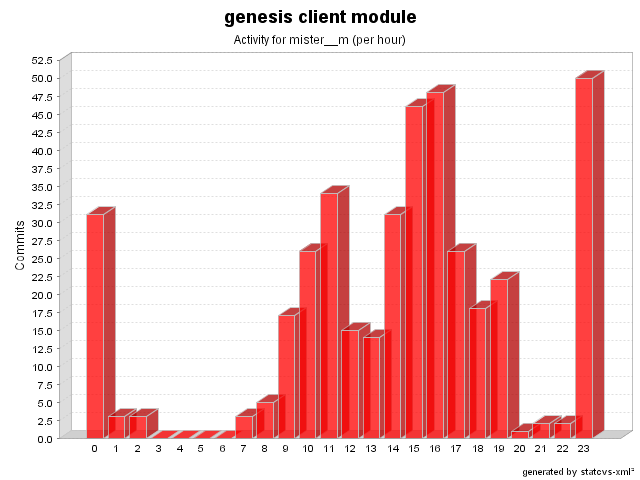

| Login: mister__m Fullname: mister__m Revisions: 397 Lines of Code: 10069 Added Lines of Code: 12550 Lines of Code per Change: 25.4 |

| Date | Author | File/Message |
|---|---|---|
| 1/30/08 11:30 AM | mister__m | Combos and Lists are now able to handle selections properly (issue # 428, improved implementation)
(7 Files changed,
229 Lines changed) test-src/net/java/dev/genesis/ui/swt/widgets/ListWidgetBinderTest.java 1.6
(+51
-1)
test-src/net/java/dev/genesis/ui/swt/widgets/ComboWidgetBinderTest.java 1.5
(+77
-3)
src/net/java/dev/genesis/ui/swing/components/ComponentBinderHelper.java 1.2
(+5
-2)
src/net/java/dev/genesis/ui/swt/widgets/WidgetBinderHelper.java 1.1 added 81 test-src/net/java/dev/genesis/ui/swing/components/JComboBoxComponentBinderTest.java 1.9
(+1
-5)
src/net/java/dev/genesis/ui/swt/widgets/ComboWidgetBinder.java 1.10
(+10
-38)
src/net/java/dev/genesis/ui/swt/widgets/ListWidgetBinder.java 1.11
(+4
-33)
|
| 1/30/08 11:23 AM | mister__m | Registry now uses WeakHashMap to prevent memory leaks (issue # 480)
(1 Files changed,
3 Lines changed) src/net/java/dev/genesis/registry/Registry.java 1.6
(+3
-3)
|
| 12/12/07 2:04 PM | mister__m | JList and JComboBox now are able to handle selection properly (issue # 477)
(9 Files changed,
282 Lines changed) test-src/net/java/dev/genesis/ui/swing/components/JComboBoxComponentBinderTest.java 1.8
(+89
-9)
test-src/net/java/dev/genesis/ui/swing/SwingBinderTest.java 1.4
(+4
-2)
test-src/net/java/dev/genesis/ui/swing/components/JListComponentBinderTest.java 1.5
(+61
-1)
test-src/net/java/dev/genesis/ui/swing/components/SwingUtils.java 1.3
(+14
-1)
src/net/java/dev/genesis/ui/swing/renderers/KeyValueListCellRenderer.java 1.9
(+4
-39)
test-src/net/java/dev/genesis/mockobjects/MockBean.java 1.2
(+22
-0)
src/net/java/dev/genesis/ui/swing/components/ComponentBinderHelper.java 1.1 added 83 src/net/java/dev/genesis/ui/swing/components/JComboBoxComponentBinder.java 1.15
(+3
-16)
src/net/java/dev/genesis/ui/swing/components/JListComponentBinder.java 1.18
(+2
-15)
|
| 12/11/07 9:11 AM | mister__m | Extended fix for issue # 459
(2 Files changed,
144 Lines changed) test-src/net/java/dev/genesis/ui/swing/SwingBinderTest.java 1.3
(+100
-3)
src/net/java/dev/genesis/ui/swing/SwingBinder.java 1.20
(+44
-15)
|
| 12/6/07 2:30 PM | mister__m | Improved test case for issue # 476
(1 Files changed,
28 Lines changed) test-src/net/java/dev/genesis/ui/UIUtilsTest.java 1.2
(+28
-10)
|
| 12/6/07 9:01 AM | mister__m | Context class loader is now used to load the bundle (issue # 476)
(1 Files changed,
6 Lines changed) src/net/java/dev/genesis/ui/UIUtils.java 1.4
(+6
-3)
|
| 12/6/07 9:01 AM | mister__m | Test case for issue # 476
(1 Files changed,
71 Lines changed) test-src/net/java/dev/genesis/ui/UIUtilsTest.java 1.1 added 71 |
| 11/27/07 5:17 PM | mister__m | Identity-based EqualityComparator implementation (issue # 475)
(2 Files changed,
64 Lines changed) src/net/java/dev/genesis/equality/IdentityEqualityComparator.java 1.1 added 25 test-src/net/java/dev/genesis/equality/IdentityEqualityComparatorTest.java 1.1 added 39 |
| 11/22/07 9:34 AM | mister__m | @DataProvider now works with multiple selection lists (issue # 466)
(4 Files changed,
343 Lines changed) test-src/net/java/dev/genesis/ui/swt/widgets/ListWidgetBinderTest.java 1.5
(+78
-3)
src/net/java/dev/genesis/ui/swt/widgets/ListWidgetBinder.java 1.10
(+98
-11)
src/net/java/dev/genesis/ui/swing/components/JListComponentBinder.java 1.17
(+110
-13)
test-src/net/java/dev/genesis/ui/swing/components/JListComponentBinderTest.java 1.4
(+57
-0)
|
| 11/22/07 9:30 AM | mister__m | Unused imports removed
(2 Files changed,
0 Lines changed) test-src/net/java/dev/genesis/ui/swt/lookup/MapWidgetLookupStrategyTest.java 1.7
(+0
-1)
test-src/net/java/dev/genesis/ui/swing/lookup/MapComponentLookupStrategyTest.java 1.4
(+0
-1)
|